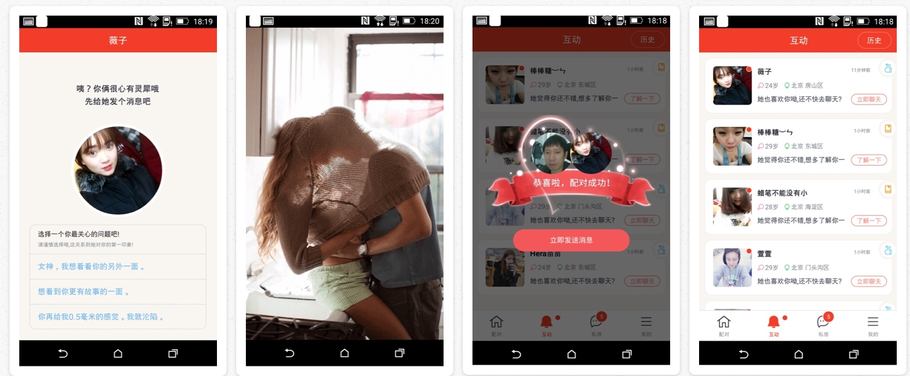
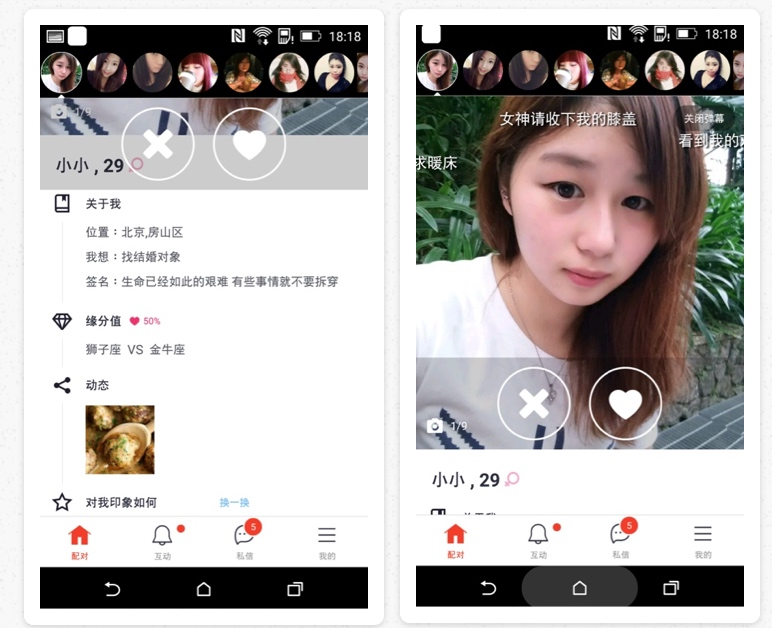
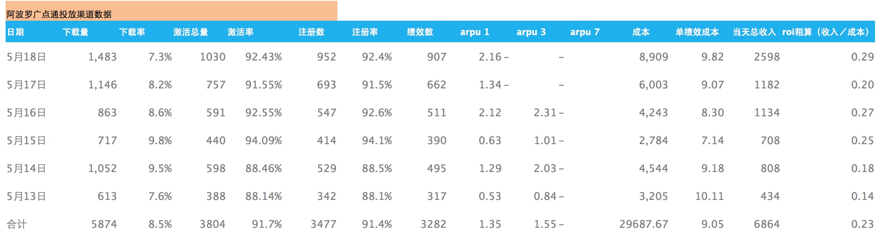
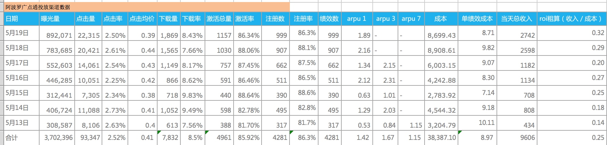

计划进度表（截止到7月底）

1.发布 V3.0 版本
V3.0版本已经发布，主线逻辑，语音，弹幕，视频功能 + 策略V1.0版本。



第一版 实现了基本功能的串联，但当前的问题不少，主要问题还是流程的串接很牵强，用户会晕。
2.测试放量
5月14日起，开始在广点通放量，每日用户在800左右，主要用以商业化建模及优化。
目前两个问题：
获取成本偏高，9块钱左右，同有缘系的产品比较，下载注册率很高，主要是出现在点击到下载的环节，别的产品 12-14%左右，新绝配只有 8%。前期为了达到测试量，出价稍高，后续会进行成本方面的优化。


当前的arpu值偏低，目前当天的arpu在2块左右，离预期3块多还有一定的差距，除了bug以外，目前还在做策略的调整。27日上线的版本将会加上漂流瓶和视频内容。
A面
V3.0版本上线，目前Arpu值为达到预期，我自己来看有以下几个问题：
- 主线流程的设计不够流畅，整个用户旅程，用户会很晕。
- 基于生态的策略设计同以前的虚拟策略的设计不同，还在调优中
- 付费结构的设计，目前是 98和168，168基本无人购买。
下周就这几个问题进行改进，并同期开发 v3.1版中视频和漂流瓶（策略信）功能。
B面
本周A面增调资源解决线上问题，预计部分技术资源将延长使用1周。主要影响注册和授权模块，以及偶遇模块的前端。具体delay情况需下周一明确评估。 现在暂时维持5.27 v3.1的版本时间不调整
资料和授权模块的数据埋点方案已确认，由于新加入的监测点较多，有缘网的参考数据提取不顺利，预计下周协调数据组资源解决
资料和授权模块的具体方案，需要更多考虑和A面的同步及效率。本周已和A面完成原则性的问题沟通，赵安庆正在针对A面的具体问题点进行调整，预计下周再同步一遍进展
本周对直播产品的影响进行了公司级讨论，初步结论是直播更多为媒体属性，不会对我们现有社交产品形态产生本质冲击。 但直播的形态和技术可以为我们所用，从而大幅提升产品力
新产品部门整体思路
项目代号：阿波罗 Apollo
部门一小步，公司一大步
阿波罗项目任务
- 开发一款符合新时代特征，具有充分市场竞争力的创新社交产品——绝配；
- 在全面提升ROI的同时，能够形成更加良好的线上生态，满足更严格的合规标准。
- 后续以该产品为基础，衍生出覆盖不同需求的多产品体系，并完成品牌升级。
绝配产品的定位
是面向中低阶层大众用户，以『配对－交互－沟通』为主要形式，满足用户交友需求。
实现手段
整体系统的设计围绕商业模型和生态模型展开，称为左腿和右腿。
商业模型
通过创新的产品形态、交互形式 + 视频、语音等富媒体内容，对男女用户形成强烈的真实感和乐趣刺激，从而大幅度提升付费转化率和活跃度。
输出：
- 男性端：K值
- 女性端：K值、新增数量。
生态模型
通过引导女性用户的活跃行为，实现会员价值兑现，从而形成良好的线上生态。
输出： 男女用户在线比例，合规标准
路径：会员价值（提升满意度，降低不满意度）、严格合规

阶段性目标：
- 5月底，验证商业模型的假设是否成立
- 7月底，K值提升50%以上，且生态优于有缘网标准。
- 12月底，形成良好生态，立住右腿。
资源